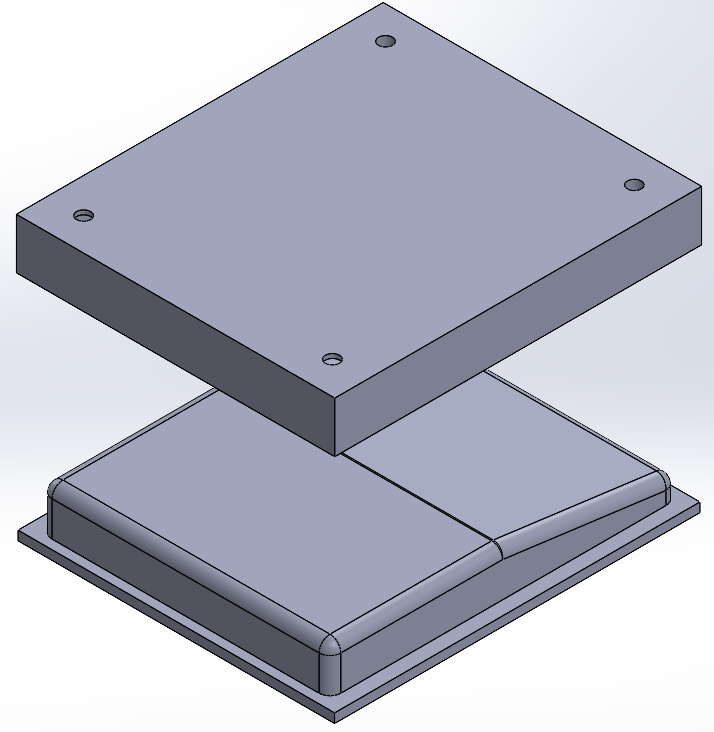

Gaggiuino and Topology Optimization
I've always wanted a dedicated Microphone at my desk for video calls, as I don't like using a headset, and I saw the DIYPerks video about making your own microphone and thought that would be a good project. During this project I used the same circuit used in the DIYPerks video but I designed the enclosures and how the metal mesh gets made.
The first main goal for the design for this enclosure is that it has to mechanically isolate the microphone capsule from virbrations. The second goal is to allow a metal mesh to be placed around the microphone capusule to help with sound isolation and protection from the environment. Lastly, it has to be visually applealing. My solution to theses goals is shown to the right.
To mechanical isolate the capusule, I decided to create a part that is connected to a frame at three points. This part would be printed using a flexable filament, thus allowing the part to stretch over the capsule and for the part to isolate the capsule. The part is then fastened to the frame of the microphone by three pegs, that using the flexable nature of the part allows the part to stretch over a hump on the top of the peg and fasten it. The microphone capsule part is the black part on the left.
The design of the frame is reletively simple. It has the three pins to fasten the microphone caspule part, a recessed groove to allow the gluing of a metal mesh, and three holes on the bottom to attach the frame to the base as well as route the wires coming from the microphone. This frame is shown to the right .
Lastly, the base of the enclosure I decided to keep this as small as possible. Its goals are to have a pass through for the wires, mounting for the frame, and mounting for the base to a microphone arm.
To complete the microphone enclosure, I have to create a metal mesh that sits around the microphone capsule to protect the capsule from the enviroment and aid in sound isolation. How I accomplished this is by using #60 stainless steel mesh that I got from McMaster Carr and a press I designed. The press, uses simliar ideas from the shift knob project, with the difference being it is only a two part mold. The main features of this press is that I have to be weary about the maximum angle I can bend the mesh at and how to remove the press and part. I figured out the maximum angle by trial and error. To desig around removing the part I made sure to add a lip to help removing the top part of the press and I added holes around the corners to allow me to add bolts to help press out the top of the mold.
What I have left to do is create the rest of the circuit and assemble the parts.
Gaggiuino and Topology Optimization

Refitting the IVSG Mapping Van

Forged Carbon Fiber Shift Knob
Serious collaboration or work inquiries only.